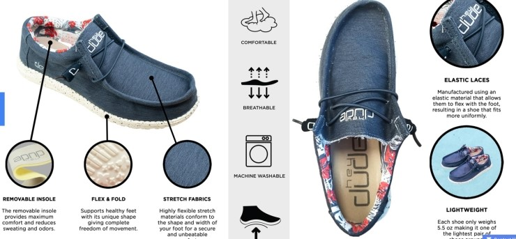
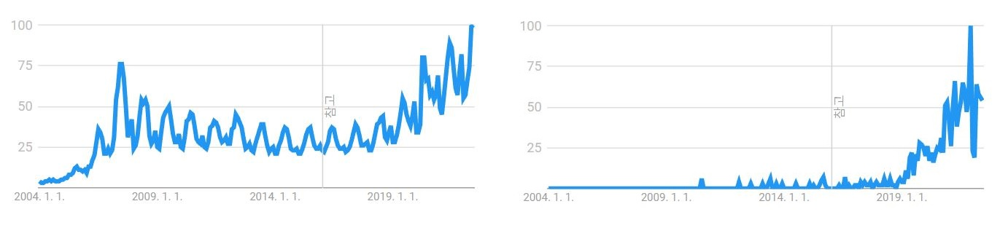

투자 - 크록스
Written on June 17th, 2022 by zaimy크록스
1) 재무분석
- 재무상태표
| 항목 | TTM | 21년 |
|---|---|---|
| 현금 | 171,969 | 213,197 |
| 부채 | 3,106,908 | 963,559 |
| 매출채권 | 375,750 | 182,629 |
| 매입채무 | 202,919 | 162,145 |
| 유형자산 | 335,454 | 269,166 |
| 무형자산 | 2,538,447 | 30,402 |
| 재고 | 407,589 | 213,520 |
- 손익계산서
| 항목 | TTM | 21년 |
|---|---|---|
| 매출 | 2,513,466 | 2,313,416 |
| 영업이익 | 677,055 | 683,064 |
| 순이익 | 700,056 | 725,694 |
| CAPEX | 87,719 | 55,916 |
- 가치평가
비즈니스 모델에서 언급할 헤이듀드 인수때문에 발생한 유형자산때문에 RIM을 쓰기 애매함, 그렇기에 DCF를 통하여 가치를 구해냄
| 항목 | TTM | 22년 | 23년 | 24년 | 25년 | 26년 | 27년 | T |
|---|---|---|---|---|---|---|---|---|
| 성장률 | 18% | 16% | 14% | 12% | 10% | 8% | 6% | 3% |
| 매출액 | 2,513,466 | 2,965,890 | 3,440,432 | 3,922,093 | 4,392,744 | 4,832,018 | 5,218,580 | 5,531,695 |
| 마진 | 25% | 23% | 21% | 19% | 17% | 15% | 13% | 12% |
| 기타비용 | 30% | 30% | 30% | 30% | 30% | 30% | 30% | 30% |
| FCFF | 439,857 | 477,508 | 505,744 | 521,638 | 522,737 | 507,362 | 474,891 | 464,662 |
| PV | 434,098 | 417,970 | 391,915 | 357,036 | 315,032 | 268,063 | 3,406,361 |
- COE : 10%
- 적정주가 : 34.501~43.126
2) 비즈니스모델 분석

헤이듀드- 사업별
| 항목 | 비중 |
|---|---|
| 크록스 | 73% |
| 헤이듀드 | 27% |
| 항목 | 비중 |
|---|---|
| 북미 | 58% |
| 유럽 | 24% |
| 아시아 | 18% |
- 성장성

크록스(좌) 헤이듀드(우) 구글트랜드이미 10%이상씩 성장하고 있던 회사이다.
2022년 분기매출기준으로 대략 미국전체 보급률이 20%+@라고 유추해볼수 있다.
사실상 하나의 신발이 아무리 파이를 크게 먹어도 30%이상 보급률에서 고속성장은 힘들다고 보며
그것을 인식한듯이 헤이듀드라는 새로운 엔진을 부착하며 더욱더 성장하기위한 날개짓을 했다.
결과적으로 무리한 인수가 되었지만 그렇다고 지금의 저평가를 받아야되는지는 의문이다.
헤이듀드는 크록스와 동일하게 높은 마진의 편안함을 목표로 추구한다.
그리고 기존의 크록스가 편한자리에서 더 편안함을 이라는 가치를 추구했다면
헤이듀드는 격식있는 자리에서 더 편안함을 이라는 가치를 추구한다.
시기의 문제가 있긴하지만 비즈니스적으로 카니발라이즈가 일어나지 않는 적절한 인수라고 생각한다.
- 영속성
헤이듀드인수로 매우 위험한 수준의 부채를 떠안게 되었다.
그러나 예상이익이 어느정도 수준이하로 떨어지지않는이상 충분히 감내할 수 있는 범위이며
향후 1~2년이 회사의 영속성을 좌지우지 할수있는 중요한 시점이 될것이다.
부채해결된다는 가정하에 미국 Z세대들의 추억을 먹고 자라는 중이라 장기적인 영속성을 유지할 수 있을것으로 기대한다.
당장은 신발 비즈니스만 하지만 자동화, 전산화를 매우 적극적으로 활용하기에 향후 어떤 확장성을 보여줄지는 예측불허다.
- 주주친화
당분간은 부채를 상환해야되기때문에 불가능하지만
인수전에는 주주들이 걱정할정도로 자사주매입을 적극적으로 하던 극단적인 주주친화적인 회사
겨울이 끝나고나면 다시한번 주주친화적인 행보를 기대해봄직하다.